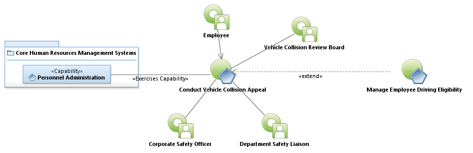
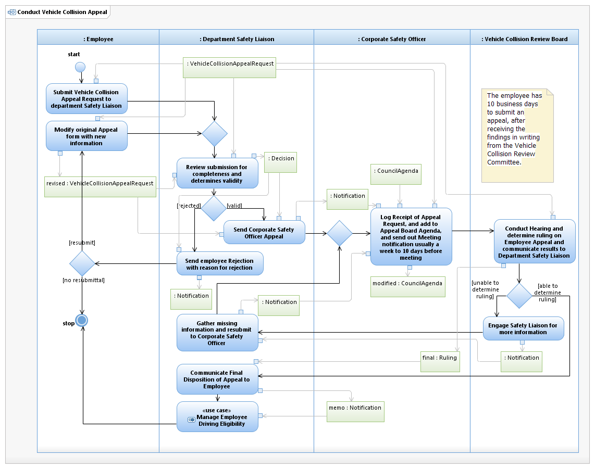

Use Case Model: Conduct Vehicle Collision Appeal
Architect: Aaron Brown, IT Enterprise Architect Senior
Date Last Modified: 3/28/2013
User Review: Linda Lazo, Sharon Huckabee
Date: 03/28/2013
An Employee is dissatisfied with the Collision Review Committee's findings about a specific collision in which they were found culpable. A request for Appeal can be submitted by the employee, and the Collision Appeal Board will review the findings and rule on the final employee collision liability assessment.
Follow link to Role Definitions

Use Case Model: Conduct Vehicle Collision Appeal

Activity Model: Conduct Vehicle Collision Appeal